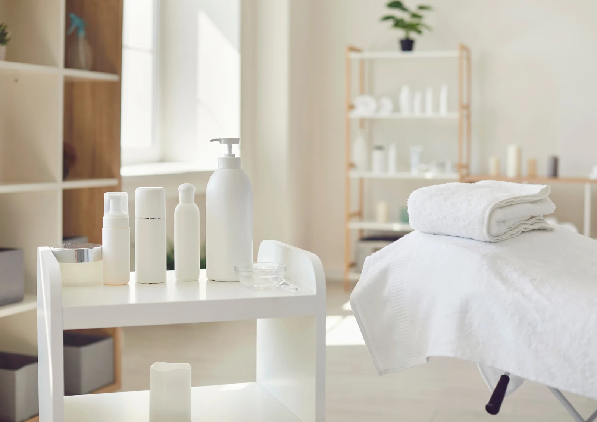

Vedd fel velem a kapcsolatot!
A bőröd meghálálja a törődést. Ha kérdésed van a kezelésekről, vagy időpontot szeretnél egyeztetni, keress bizalommal.

Adj időt magadnak.
A bőröd meghálálja.
Kérdésed van a kezelésekről, vagy időpontot szeretnél egyeztetni? Keress bizalommal, és segítek megtalálni a számodra legjobb megoldást!
Nyitvatartás
Kizárólag előre egyeztetett időpontra.
Kérdésed van?
Összegyűjtöttem a leggyakoribb kérdéseket. Ha másra is kíváncsi vagy, keress bizalommal.
Időpont nélkül is érkezhetek?
Nem, a kozmetikámban kizárólag időpontra fogadok vendégeket.
Honnan tudjam, melyik kezelés való nekem?
Az első találkozás alkalmával a kezelés előtt diagnosztizálom a bőrödet, és felvázolom a kezelési tervet.
Kapok segítséget az otthoni rutinomhoz?
Igen, természetesen! Az első alkalmat követően elmondom, hogy mire figyelj a mindennapokban, milyen termékeket használj, hogy a bőröd a lehető legjobb törődést kapja.
Hogyan tudok fizetni?
Bankkártyával és készpénzzel is fizethetsz a szalonban.